Não é um bloco de notas com campos. Você diz o que aconteceu na mesa; o app aplica a regra, mostra a conta e cita a página do Módulo Básico.
A tela que fica aberta durante o jogo. Quase tudo aqui é clicável — e boa parte não parece. Toque nos pontos.
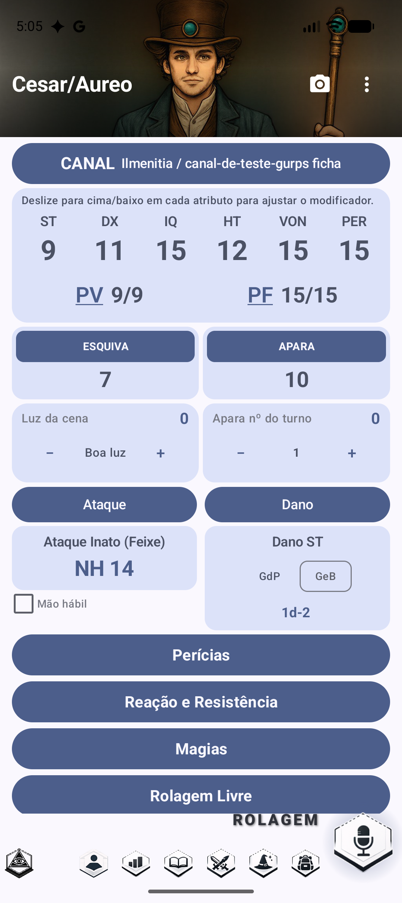
Cada rolagem pode ser publicada num canal de Discord, para o Mestre ver o resultado sem ninguém precisar cantar o número.
Tocar rola contra o atributo. Deslizar para cima ou para baixo muda o modificador da próxima rolagem — sem abrir nada. É o gesto que mais gente não descobre sozinha. Na variante para quem não enxerga há botões no lugar do gesto.
Abre o diálogo de ferimento: silhueta do corpo, tipo de dano, RD das armaduras vestidas, e a conta inteira. Está sublinhado justamente por isso.
MB p.399-400, 419-422Marque de onde veio o cansaço — esforço, magia, calor, sede, sono — e o PF desce sozinho. Desmarcando, sobe de volta.
MB p.426-428Já vêm com escudo, carga, Reflexos em Combate e o que mais existir na ficha. Tocando, você vê de onde saiu cada ponto.
Escolha a iluminação uma vez; o redutor entra em toda rolagem de visão e de combate — já descontando a Visão Noturna do personagem.
MB p.394, 549A 2ª apara do turno custa −4, a 3ª −8, a 4ª −12, e tudo zera no turno seguinte. O app conta.
MB p.377Tocar no número rola 3d6 com dados 3D e diz o resultado — sucesso, falha, crítico e por quanto.
A tabela de dano por Força já resolvida, com o botão para alternar entre gume e ponta.
Tudo o que está na ficha, rolável com um toque. A magia já cobra a energia.
O teste de reação com os modificadores sociais somados, e os testes de resistência num lugar só.
MB p.494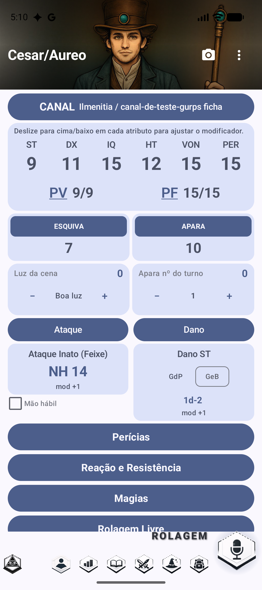
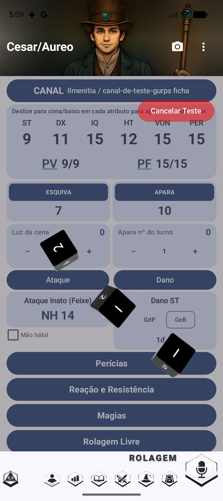
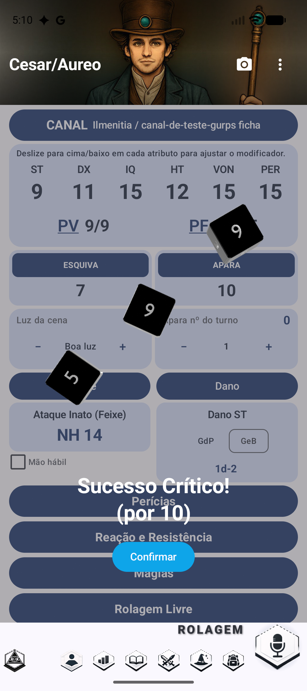
O Mestre diz “12 de corte no peito”. Isto é o que ninguém faz de cabeça no meio da mesa — e o app faz em dois toques.
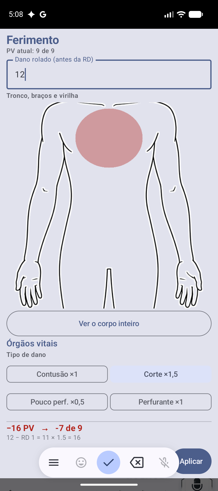
A silhueta tem 16 regiões, com lado — braço esquerdo e direito são coisas diferentes quando um deles é decepado. O primeiro toque dá zoom; o segundo escolhe.
O buraco no meio do tronco não é falha de desenho: vitais têm regra própria — ×3 para perfurante e perfuração, e −5 no teste de queda.
MB p.399O zoom navega entre quatro recortes: corpo todo, rosto, tronco com braços e virilha, e a parte de baixo.
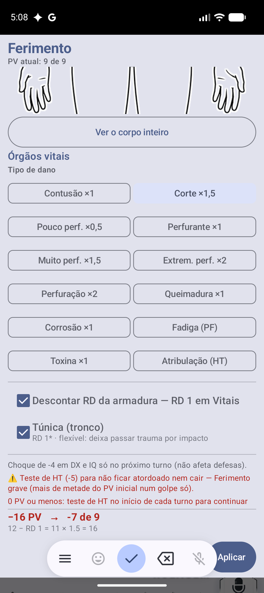
A tabela completa da p.380: contusão, corte, perfuração, as quatro subclasses de perfurante, queimadura, corrosão, toxina, fadiga e atribulação. Fadiga desconta PF, não PV. Atribulação não tira ponto nenhum — vira teste de HT.
MB p.380A ficha sabe o que ele comprou e o que cada peça cobre — e comprar não é vestir. Cada peça tem a sua caixinha, e a marca fica salva.
O asterisco do livro quer dizer que o golpe barrado ainda machuca por impacto. O app calcula esse trauma quando a peça segura o golpe inteiro.
MB p.380Igual aos PV perdidos, com teto de −4 — e o app já diz que não afeta as defesas, que é a metade da regra que todo mundo esquece.
MB p.419-421Ferimento grave é lesão acima de metade do PV inicial num golpe só. O app percebe, avisa e aplica o modificador do local — −5 no rosto e vitais, −10 no crânio.
MB p.420-42112 − RD 1 = 11 × 1.5 = 16. Automação que não se explica é caixa preta —
e num jogo de regras, quem não confere não confia.
150 armas, 72 armaduras e 7 escudos, com todas as estatísticas. Tocar num item do catálogo não o compra: abre a ficha técnica.
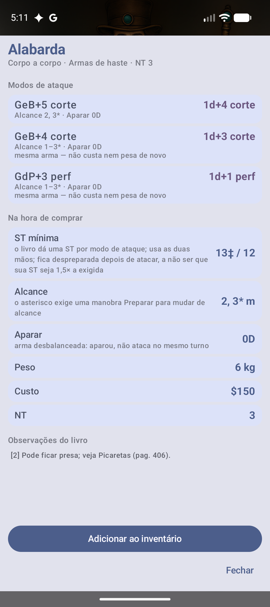
A Alabarda tem três, e o dano de cada um já vem resolvido com a Força do personagem:
GeB+5 corte vira 1d+4 corte. E avisa que o segundo modo é a
mesma arma — não custa nem pesa de novo.
13‡ / 12 não diz nada sozinho. Aqui vem escrito: usa as duas mãos, fica
despreparada depois de atacar, a não ser que a sua ST seja 1,5× a exigida.
O asterisco do alcance exige uma manobra Preparar. 0D no Aparar quer dizer
arma desbalanceada: aparou, não ataca no mesmo turno.
O catálogo guarda só [2]. O app mostra o texto: “pode ficar presa;
veja Picaretas”. Número de rodapé sem o rodapé não informa nada.
Dois toques em vez de um — para ninguém comprar uma arma sem descobrir que ela pesa 6 kg e exige ST 13.
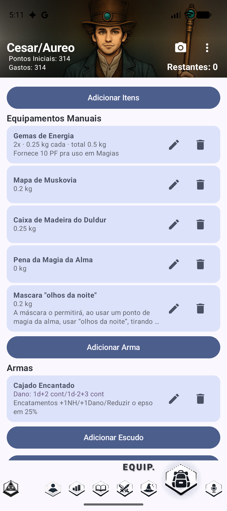
2x · 0.25 kg cada · total 0.5 kg. Com um item só, aparece só o peso —
repetir o mesmo número três vezes gastava linha à toa.
Nota comprida termina em reticências. Sem isso, um item de dez linhas ocupava mais tela que os quatro acima dele juntos — e a lista deixava de ser lista.
Abre o item com a mesma ficha técnica do catálogo em cima e os campos embaixo — inclusive RD na armadura e BD no escudo, que é por onde entra a peça encantada.
Arma pesada demais para o personagem aparece em vermelho, dizendo o que custa: “Falta ST 3: −3 no ataque e 1 PF a mais”.
Barata, boa, superior, altíssima. O bônus entra no dano — e só em lâmina: uma maça superior não bate mais forte.
Uma peça de tronco e virilha pode entrar só num dos dois, com peso e custo divididos.
Avisa quando o livro não permite empilhar, e cobra o −1 na DX da camada extra.
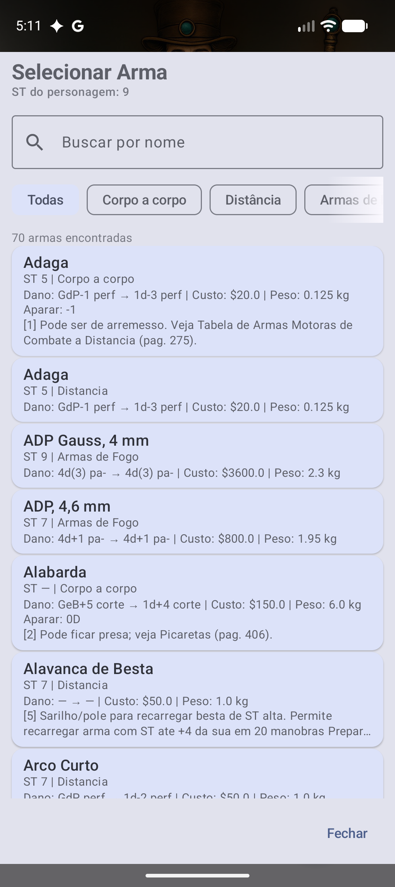
118 técnicas de Artes Marciais e Gun Fu, não só do Módulo Básico. É onde fica mais claro que o app não só guarda: ele confere.
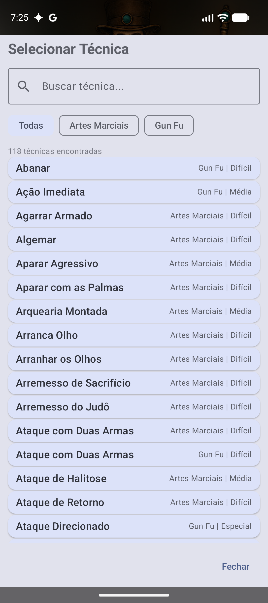
Artes Marciais e Gun Fu entram junto com o Básico. O chip separa a origem, porque a mesma técnica pode existir nos dois com regras diferentes.
Gun Fu | Difícil — de onde veio e quanto custa aprender, sem abrir nada.
Ataque com Duas Armas aparece duas vezes: a versão de Artes Marciais e a de Gun Fu são técnicas diferentes, com pré-requisitos diferentes. Fundi-las seria perder uma.
118 técnicas é lista demais para rolar. A busca filtra enquanto você digita.
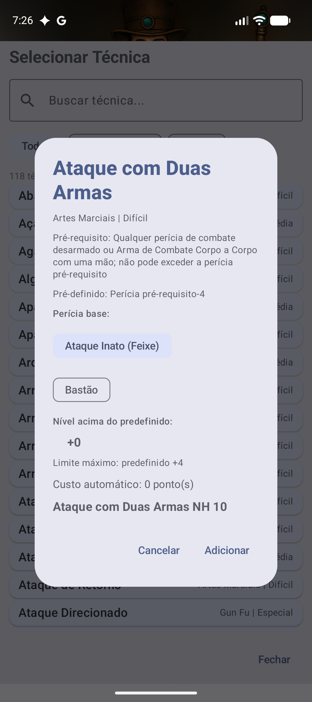
“Qualquer perícia de combate desarmado ou Arma de Combate Corpo a Corpo com uma mão; não pode exceder a perícia pré-requisito.” Não é um resumo — é a regra.
Perícia pré-requisito−4. É de onde a técnica parte antes de qualquer ponto
gasto nela.
O app varre a ficha e oferece só as perícias que atendem ao pré-requisito — aqui, Ataque Inato (Feixe) e Bastão. A mesma técnica dá NH diferente conforme a base escolhida.
Você sobe o nível e o app cobra os pontos. O limite máximo logo abaixo é o teto que aquela técnica tem no livro — passar dali não é permitido.
Difícil e Média custam diferente por nível. O app calcula enquanto você mexe.
NH 10 — o número com que você vai rolar na mesa, já visível antes de gastar o ponto.
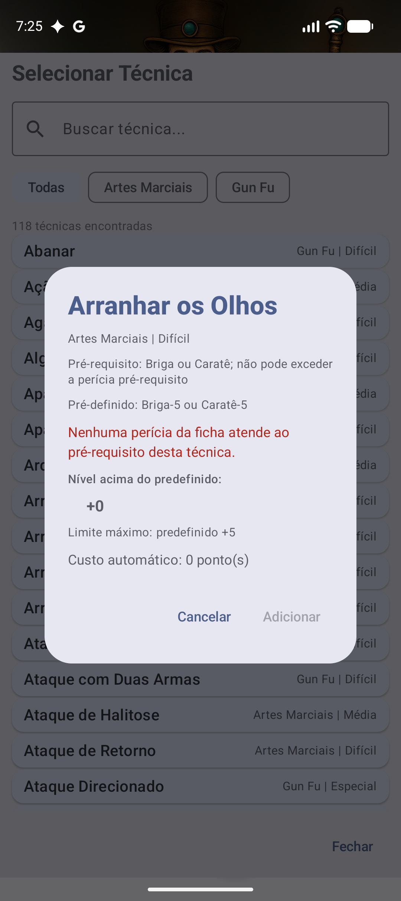
Arranhar os Olhos exige Briga ou Caratê. Este personagem não tem nenhuma das duas — e em vez de deixar comprar e quebrar a regra, o app explica o que falta.
Briga−5 ou Caratê−5: sem uma dessas perícias não existe de onde partir.
Não é aviso que dá para ignorar clicando assim mesmo. O botão só acende quando a ficha atende ao livro.
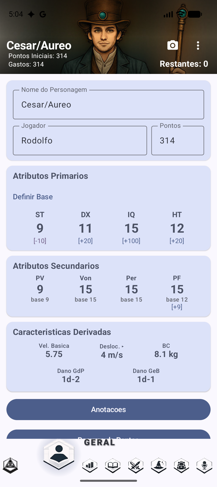
O colchete embaixo do número mostra quantos pontos aquele atributo custou — e o topo da tela soma tudo e diz o que sobra.
PV, Vontade, Percepção e PF saem dos primários, mostrando a base e o quanto foi comprado por cima.
Toque e abre todos os deslocamentos: correndo, nadando, voando, rastejando, saltando. A seta é discreta e a maioria não a vê.
GdP e GeB já resolvidos pela tabela do livro.
Fixa a base a partir da qual os custos passam a ser contados — útil quando o personagem evolui e você quer saber o que foi gasto depois.
272 vantagens, 218 desvantagens e 281 perícias — com o custo calculado e os modificadores aplicados.
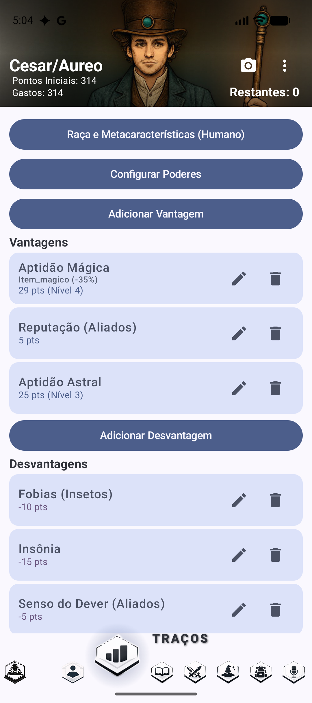
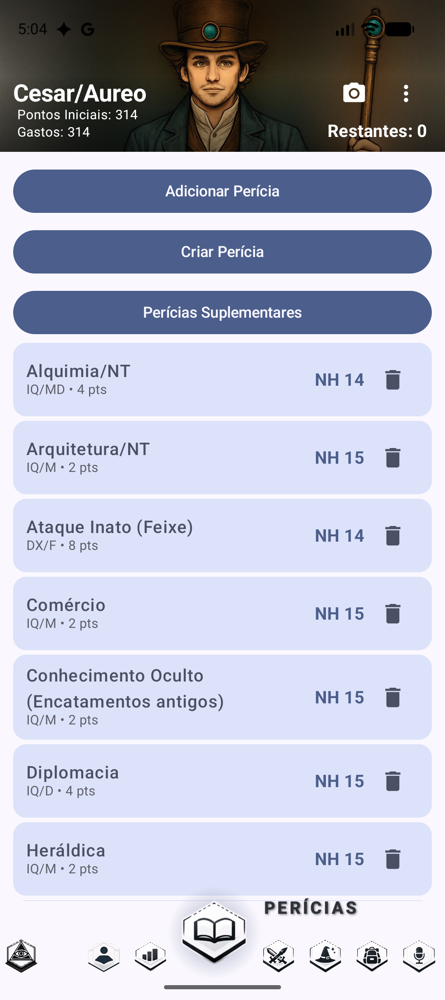
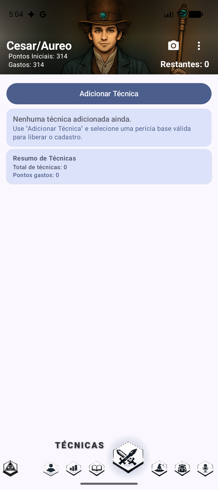
Reflexos em Combate aparece no Bloqueio. Sorte vira botão na Rolagem. Visão Noturna desconta a penalidade de luz sozinha.
O app avisa quando dois traços não podem conviver, e quando um passa do teto de nível.
218 ampliações e limitações, com a porcentagem aplicada ao custo final.
O número de autocontrole das desvantagens vira teste rolável.
É a aba onde o app deixa de ser catálogo e vira ferramenta: ele sabe o que falta para cada magia, e sabe traçar o caminho até a que você quer.
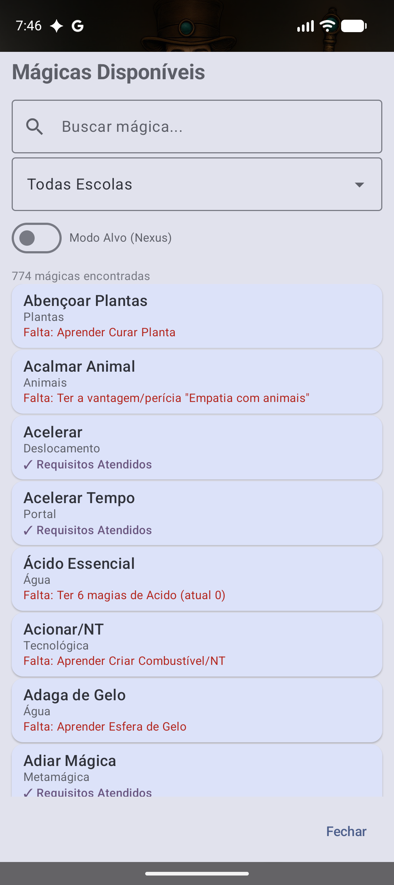
Não é um “indisponível” genérico. É “Falta: Aprender Curar Planta”, “Falta: Ter a vantagem/perícia Empatia com animais”, “Falta: Ter 6 magias de Ácido (atual 0)” — cada pré-requisito com o nome do que está faltando, e quanto falta.
✓ Requisitos Atendidos: essa você pode aprender agora. A lista inteira fica legível de relance, sem abrir nada.
Plantas, Animais, Deslocamento, Portal, Água, Tecnológica, Metamágica… A escola decide pré-requisitos e estilo, e está sempre à vista.
Toque para escolher uma das escolas do livro de Magia e cortar a lista.
Com 879 magias no catálogo, a busca é o caminho mais curto quando você já sabe o que procura.
Um interruptor discreto, e a coisa mais poderosa desta tela. Veja abaixo.
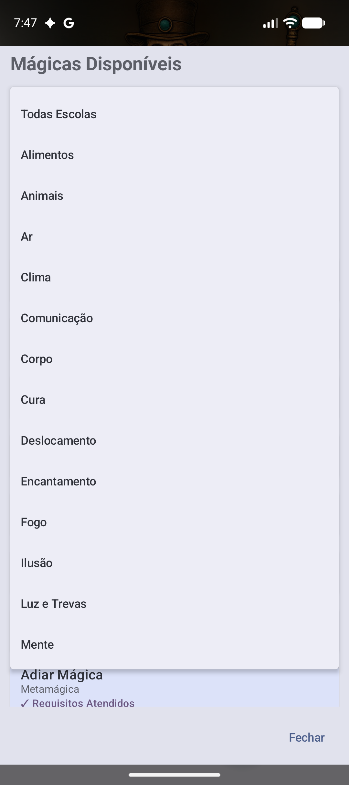
Alimentos, Animais, Ar, Clima, Comunicação, Corpo, Cura, Deslocamento, Encantamento, Fogo, Ilusão, Luz e Trevas, Mente — e continua rolando. São as escolas do livro de Magia, não uma seleção.
O primeiro item limpa o filtro.
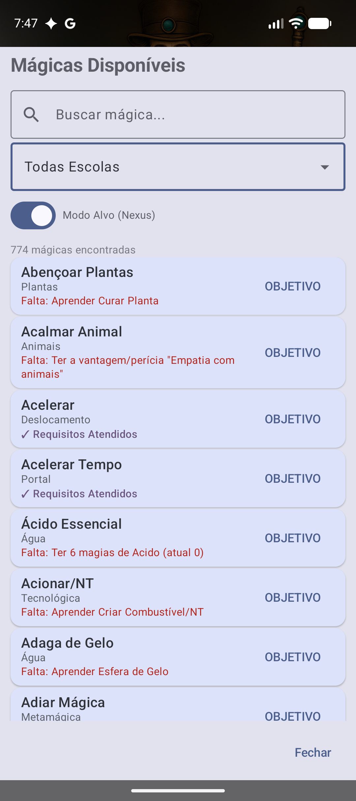
Nada muda no conteúdo da lista — muda o que um toque faz.
Toque nele e aquela magia vira o destino. O app então mostra só o que interessa para chegar lá.
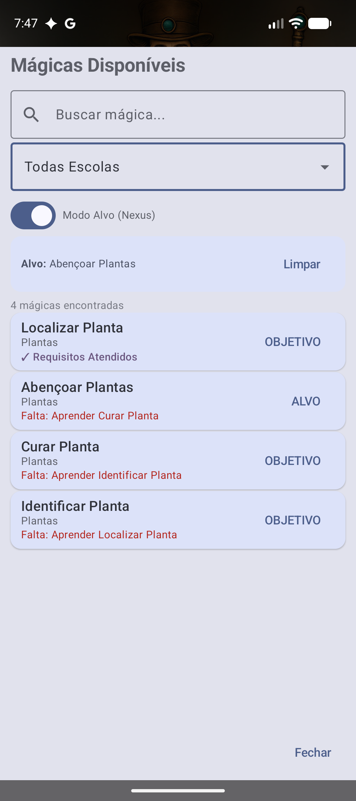
Escolhido o alvo, a lista deixa de ser catálogo e vira roteiro: só as magias do caminho, e mais nenhuma.
Alvo: Abençoar Plantas — para você não perder de vista onde queria chegar.
Localizar Planta é a única com ✓ Requisitos Atendidos: é o primeiro degrau, o único que você pode aprender hoje.
Identificar Planta pede Localizar. Curar Planta pede Identificar. Abençoar Plantas pede Curar. Quatro magias, três dependências — e o app leu isso das 879 sozinho.
Solta o alvo e devolve a lista inteira.
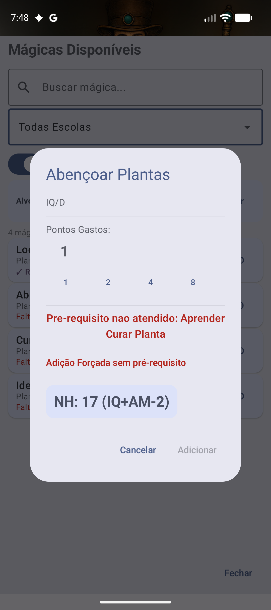
IQ/D — Inteligência, Difícil. É de onde o NH sai.
1, 2, 4, 8 — não é campo livre. São os degraus em que o NH realmente sobe; gastar 3 pontos numa magia não compra nada que 2 não comprem.
NH: 17 (IQ+AM−2). Não é só o número: é de onde ele veio —
a Inteligência, mais a Aptidão Mágica, menos 2 pela dificuldade.
“Pré-requisito não atendido: Aprender Curar Planta”. E o botão Adicionar fica desligado — não dá para passar por cima sem querer.
O livro é a regra, mas a mesa é sua. Se o Mestre liberou aquela magia por um motivo de história, este é o caminho — e ele existe justamente para não ser acidental.
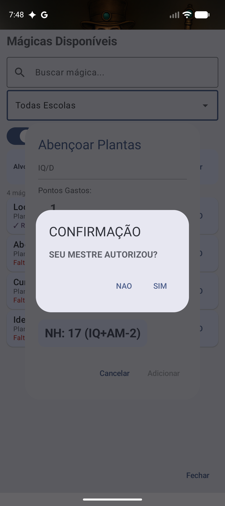
É o que o app pergunta antes de deixar você quebrar o pré-requisito. Não é um aviso que se fecha no automático: é uma pergunta, com Não e Sim.
A regra do livro vale por padrão e a exceção existe — mas passa por uma decisão consciente, com o nome de quem a autoriza. É a diferença entre um app que impõe e um que lembra.
Mesmo no caminho da exceção, o número com que você vai rolar está ali, com a conta.
Sem Aptidão Mágica, ela não aparece. Quem não é mago não vê tela vazia.
Ao rolar pela aba Rolagem, o PF desce sozinho. Custo variável (“1 a 3 PF”)? O app pergunta quanto antes de rolar.
Toque no nome da magia na ficha e vem o texto do livro, com duração, manutenção e tempo de execução.
As 879 do catálogo menos as que ele já sabe — por isso a lista abre em 774.
Sessenta regras do livro implementadas como código puro e testável, cada uma com a sua página.
| Regra | Onde mora | Livro |
|---|---|---|
| Ferimento por local do corpo | FerimentoPorLocalRules | MB p.399-400, 419-422 |
| Tipos de dano (12) | TiposDeDano | MB p.43-44, 379-380 |
| Trauma por impacto | TraumaPorImpacto | MB p.380 |
| Corrosão na armadura | CorrosaoNaArmadura | MB p.380 |
| Cobertura da armadura | CoberturaDaArmadura | MB p.379 |
| Sobrepor armaduras | CamadasDeArmadura | MB p.287 |
| Qualidade da arma | QualidadeDaArma | MB p.275-276 |
| ST mínima da arma | StMinimaDaArma | MB p.271 |
| Ficha técnica da arma | FichaTecnicaDaArma | MB p.270-272, 508 |
| Ficha técnica da armadura | FichaTecnicaDaArmadura | MB p.283-286 |
| Ficha técnica do escudo | FichaTecnicaDoEscudo | MB p.288, 484 |
| Notas da tabela de escudos | NotasDoEscudo | MB p.288 |
| Locais de ataque | LocaisDeAtaque | MB p.398-400 |
| Modificadores de combate | ModificadoresDeCombate | MB p.547-549 |
| Golpe rápido e apara repetida | GolpeRapidoEAparaRules | MB p.371, 377 |
| Avançar e atacar | AvancarEAtacarRules | MB p.366 |
| Apontar | ApontarRules | MB p.270, 364, 373 |
| Tiro contínuo | TiroContinuoRules | MB p.407-409 |
| Tamanho do alvo | TamanhoDoAlvoRules | MB p.549-550 |
| Velocidade e distância | TabelaVelocidadeDistancia | MB p.550-551 |
| Alcance do ataque | AlcanceDoAtaque | MB p.271 |
| Iluminação da cena | IluminacaoRules | MB p.394, 549 |
| Fadiga e recuperação | FadigaRules | MB p.426-427 |
| Marcos de PV e PF | MarcosDeVidaRules | MB p.419 |
| Queda | QuedaRules | MB p.430-432 |
| Fôlego | FolegoRules | MB p.356 |
| Reação | ReacaoRules | MB p.494 |
| Resistência | ResistenciaRules | MB p.365, 419-424 |
| Sentidos | SentidoRules | MB p.358 |
| Sorte | SorteRules | MB p.90-91 |
| Talento instintivo | TalentoInstintivoRules | MB p.92 |
| Visualização | VisualizacaoRules | MB p.99 |
| Autocontrole | AutocontroleRules | MB p.120 |
| Estados temporários | EstadosTemporarios | MB p.137-158 |
| Incompatibilidade de traços | IncompatibilidadeDeTracos | MB p.124-162 |
| Teto de atributo | TetoDeAtributoRules | MB p.19 |
| Teto de nível do traço | TetoDeNivelDoTraco | MB p.91, 151, 159 |
| Deslocamentos | DeslocamentosRules | MB p.17, 19, 39, 91 |
| ST e DX braçais | StBracalRules, DxBracalRules | MB p.56, 89 |
| ST especializada | StEspecializadaRules | MB p.65, 88 |
| Mão inábil | MaoInabilRules | MB p.14, 157 |
| Energia das magias | MagiaEnergiaRules | Magia p.236-241 |
| Modificador de equipamento | QualidadeDoEquipamento | MB p.346 |
| Familiaridade cultural | FamiliaridadeCulturalRules | MB p.24 |
| Origem de cada número | OrigemDosNumeros | MB p.17, 375 |
Registrado de propósito — tanto para não prometer o que não existe quanto para não procurarmos o que não está lá.
| Não automatizado | Por quê |
|---|---|
| Multiplicador de preço por qualidade de arma | depende do NT da campanha, que a ficha não guarda |
| Teste de quebra ao aparar arma pesada | a qualidade já está guardada; falta a rolagem |
| Redutores de reação por usar armadura | a exceção do livro é julgamento humano |
| Tempo de vestir e tirar armadura | só importa em combate por turno |
| Sangramento | não modelado |
| Custo de vida mensal | fora do que se usa na mesa |
| Aplicar a corrosão na peça sozinho | o app não sabe qual peça o ácido atingiu — mostra o número e você decide |
| Montaria, regras especiais por arma, perigos de ambiente | adiados |